8. Fem coses xules amb Python
8.1 Lectura de dades d'un CSV
Un arxiu CSV (Comma Separated Values) conté dades organitzades per files en les quals la informació se separa normalment mitjançant comes (encara que es poden utilitzar altres caràcters de separació). S'solen utilitzar molt en informàtica per a guardar i processar gran quantitat de dades, ja que són fitxers que ocupen molt poc (arxius de text pla) i que són compatibles amb totes les plataformes (Windows, MacOS, Linux …).
L'exemple següent mostra un arxiu que emmagatzema informació sobre una comanda de fruites. Cada fila conté, separat per comes ,:
- la data i hora de la comanda
- la fruita
- un enter que indica la quantitat de peces sol·licitades
- un nombre real que és el preu per unitat d'aquesta fruita

Si volem llegir i processar les dades d'un arxiu CSV necessitem realitzar els següents passos:
- Importar el mòdul
csvque ens permetrà usar funcions específiques per al processament d'arxius CSV - Obrir l'arxiu CSV que volem processar mitjançant la funció incorporada
open()i guardar l'objecte que aquesta crea en una variable - Utilitzar la funció
csv.reader()sobre la variable creada per a obtindre unobjetode tipusreaderque podrem iterar per a anar llegint fila a fila tot l'arxiu CSV
import csv
arxiu = open('fruites.csv')
arxiu_reader = csv.reader(arxiu)
Una vegada creat l'objecte iterable, el podem recórrer amb un bucle for-in que ens tornarà, en cada iteració del bucle, una llista amb les dades de cada fila.
for fila in arxiu_reader:
print(str(fila))

La llista fila, en cada iteració, contindrà la informació d'una de les fruites de la comanda. Podem accedir als diferents valors de la llista mitjançant indexació per a extraure les dades que ens interessen.
for fila in arxiu_reader:
fruita = fila[1]
unitats = int(fila[2])
print(fruita + ' --> ' + str(unitats))

En funció del tipus de dades, haurem de fer el canvi de tipus corresponent per a poder tractar les dades correctament (int(), str(), float() …).
És important saber que només es pot iterar l'objecte reader una vegada. Per a tornar a llegir l'arxiu CSV, s'ha de tornar a cridar a open() i csv.reader() per a crear un altre objecte reader.
Una precaució que s'ha de tindre quan es treballa amb arxius, és tancar qualsevol referència a aquests una vegada acabem de processar-los (en llegir-los i especialment en escriure'ls). Per a això simplement cridarem al mètode close() de l'objecte sobre el qual es va obrir l'arxiu.
arxiu.close()
8.2 Escriptura de dades en un CSV
Si volem guardar dades utilitzades pel nostre programa Python per a un posterior processament o per a compartir-les, podem emmagatzemar-les en un fitxer CSV.
Els passos que haurem de seguir són:
- Importar el mòdul
csvque ens permetrà usar funcions específiques per al processament d'arxius CSV - Obrir en mode escriptura
'w'l'arxiu CSV en el qual volem guardar les dades mitjançant la funcióopen(archivo, ‘w’, newline=’’)i guardar l'objecte que aquesta crea en una variable - Utilitzar la funció
csv.writer()sobre la variable creada per a obtindre unobjetode tipuswriterque podrem usar per a anar guardant llistes (línia a línia).
import csv
arxiu = open('animals.csv', 'w', newline='')
arxiu_writer = csv.writer(arxiu)
En Windows, s'ha de passar una cadena en blanc com a argument de newline=’’ en la funció open(). Si s'oblida això, les files de l'arxiu CSV es mostraran a doble espai.
Una vegada creat l'objecte writer, utilitzarem la seua funció writerow() per a emmagatzemar una llista en l'última fila de l'arxiu.
arxiu_writer.writerow(['ocell', 'rata', 'serp', 'foca'])
arxiu_writer.writerow(['Hello, world of animals!', 'gos', 'koala', 'elefant'])
arxiu_writer.writerow([1, 2, 3.141592, 4])
arxiu.close()

D'aquesta manera, els valors de la llista es guardaran separats per comes ,. Recordeu que és molt important tancar l'ús de l'arxiu una vegada acabeu d'usar-lo close(). En alguns llenguatges de programació és just en aquest moment en el qual l'arxiu s'actualitza amb els canvis realitzats. Per la qual cosa és bona pràctica acostumar-se a tancar-lo sempre, amb independència del llenguatge usat.
Si en lloc de tindre els valors del CSV separats per comes , els voleu guardar amb un altre delimitador, podeu indicar-ho amb la propietat delimiter de la crida a csv.writer().
arxiu_tab = open('animals_tab.csv', 'w', newline='')
arxiu_writer = csv.writer(arxiu_tab, delimiter='\t')
arxiu_writer.writerow(['ocell', 'rata', 'serp', 'foca'])
arxiu_writer.writerow(['Hello, world of animals!', 'gos', 'koala', 'elefant'])
arxiu_writer.writerow([1, 2, 3.141592, 4])
arxiu_tab.close()
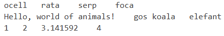
arxiu_linia = open('animals_linia.csv', 'w', newline='')
arxiu_writer = csv.writer(arxiu_linia, delimiter='|')
arxiu_writer.writerow(['ocell', 'rata', 'serp', 'foca'])
arxiu_writer.writerow(['Hello, world of animals!', 'gos', 'koala', 'elefant'])
arxiu_writer.writerow([1, 2, 3.141592, 4])
arxiu_linia.close()

8.3 Manipulació d'imatges
Pillow (PIL) és un paquet de Python de tercers (third-party) per a interactuar amb arxius d'imatge. Aquest paquet compta amb diverses funcions que faciliten retallar, redimensionar i editar el contingut d'una imatge. Per a poder fer-ho, importarem solament el mòdul Image de la llibreria.
from PIL import Image
imatge_gat = Image.open('zophie.png')
imatge_gat.show()
Mitjançant la funció open() d'Image crearem un objeto de tipus imatge a partir d'un arxiu emmagatzemat en l'ordinador. Els diferents mètodes i atributs d'aquest objeto ens permetran modificar la imatge. Per exemple, mostrarem la imatge carregada mitjançant la funció show().

Característiques de les imatges
Podem accedir als atributs de nom, format i grandària de la imatge de la següent manera.
print('Nom: ' + imatge_gat.filename)
print('Format: ' + imatge_gat.format)
ample, alt = imatge_gat.size
print('Ample =', ample, ' / Alt =', alt)
#Guardem en un altre format (jpg)
imatge_gat.save('zophie.jpg')

Com veiem, es pot guardar la imatge en un format diferent mitjançant save().
En Python, els píxels d'una imatge s'adrecen mitjançant les coordenades x i y, que especifiquen, respectivament, la seua posició horitzontal i vertical. L'origen és el píxel en la cantonada superior esquerra de la imatge i s'especifica amb la notació (0, 0).
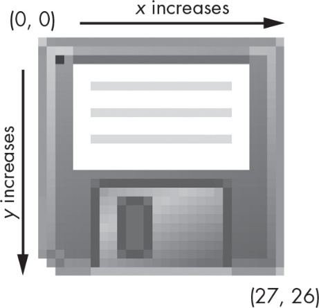
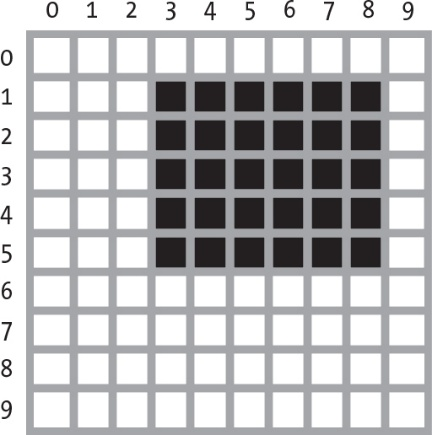
El primer 0 representa la coordenada x, que comença en 0 a l'origen i augmenta d'esquerra a dreta. El segon 0 representa la coordenada y, que comença en 0 a l'origen i augmenta cap avall, la qual cosa és contrària a com s'expliquen normalment a la classe de matemàtiques.
Moltes de les funcions de Pillow prenen com a argument una tupla de caixa (recorda que una tupla és “com una llista”, però immutable). Això significa que Pillow espera una tupla de quatre coordenades enteres que representen una regió rectangular en una imatge. Els quatre enters són, en ordre, els següents:
Left: La coordenadaxde la vora més a l'esquerra de la caixaTop: La coordenadayde la vora superior de la caixaRight: La coordenadaxd'un píxel a la dreta de la vora més a la dreta de la caixa. Aquest enter ha de ser major que l'enter esquerreBottom: La coordenadayd'un píxel per davall de la vora inferior de la caixa. Aquest enter ha de ser major que l'enter superior
Cal tindre en compte que la caixa inclou les coordenades esquerra i superior, i arriba fins a, però no inclou, les coordenades dreta i inferior. Per exemple, la tupla de caixa (3, 1, 9, 6) representa tots els píxels de la caixa negra de la figura anterior.
Retallar, copiar i apegar
Una vegada coneixem la manera de referenciar els píxels d'una imatge en Python, podem retallar una imatge mitjançant la funció crop(), passant-li la caixa a tallar amb una tupla de la següent manera.
#Creem una nova a partir d'un tall de l'original
imatge_cara = imatge_gat.crop((150, 150, 240, 250))
imatge_cara.save('tallada.png')
imatge_cara.show()

La imatge retallada podem, per exemple, apegar-la en diferents llocs de la imatge original. Ho farem sobre una còpia de l'original, creada mitjançant la funció copy(), per a així mantindre l'original sense canvis.
#Pega la cara tallada sobre una còpia de la imatge original
copia_gat = imatge_gat.copy()
copia_gat.paste(imatge_cara, (0, 0))
copia_gat.paste(imatge_cara, (250, 250))
copia_gat.save('pegada.png')
copia_gat.show()
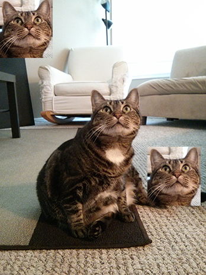
La funció paste() permet apegar una imatge sobre una altra, definint el píxel inicial a partir del qual s'apegarà mitjançant una tupla de 2 punts (x, y).
Jugant amb la funció paste() i 2 bucles for aniuats, podem aconseguir un mosaic de cares de gats sobre una còpia de la imatge original.
# Crea un mosaic de cares damunt la imatge original
ample_cara, alt_cara = imatge_cara.size
mosaic_gat = imatge_gat.copy()
#for left in range(0, ample, ample_cara):
for left in range(0, 3*ample_cara, ample_cara):
for top in range(0, alt, alt_cara):
print(left, top)
mosaic_gat.paste(imatge_cara, (left, top))
mosaic_gat.show()
mosaic_gat.save('mosaic.png')
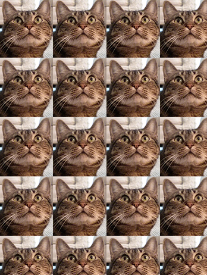
En aquest exemple utilitzem l'ample/alt de la imatge original (ample, alt) i el de la imatge de la cara (ample_cara, alt_cara) per a definir els valors left/top a partir dels quals s'apegarà cadascuna de les cares. El primer for recorrerà les files del mosaic, mentre que el for aniuat recorrerà les columnes:
-
range(0, ample, ample_cara): comença en el píxel horitzontal0, arriba a l'últim píxel de l'ample de la imatge original, incrementant en un nombre de píxels igual a l'ample de la imatge de la cara. -
range(0, alt, alt_cara): comença en el píxel vertical0, arriba a l'últim píxel de l'alt de la imatge original, incrementant en un nombre de píxels igual a l'alt de la imatge de la cara.
A mesura que es van realitzant iteracions completes del bucle aniuat, la imatge final anirà canviant de la següent manera.
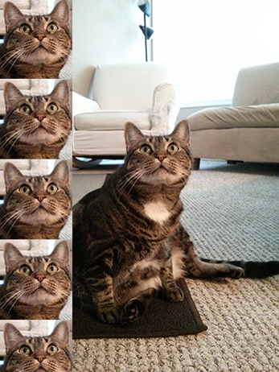 |
 |
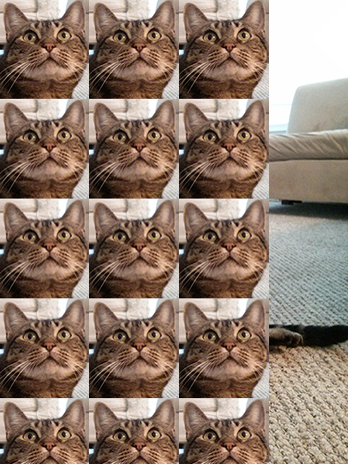 |
|---|---|---|
| left = 0 | left = ample_cara | left = 2*ample_cara |
Redimensionar i rotar
Les funcions resize() i rotate() ens permeten canviar la grandària d'una imatge i rotar-la respectivament.
# Canvia el tamany
imatge_reduida = imatge_gat.resize((int(ample / 2), int(alt / 2)))
imatge_reduida.show()
imatge_reduida.save('reduida.png')
El mètode resize() torna un nou objecte Image amb l'ample i alt especificats (no modifica l'Image original). Accepta una tupla de dos enters que representa les noves dimensions. Com que només accepta nombres enters, és necessari convertir ambdues dimensions mitjançant int().
Per a assegurar la proporcionalitat de la imatge resultant, és convenient que les noves dimensions siguen múltiples de l'ample/alt original (d'ací l'ús d'ample/2 i alt/2 en aquest exemple).
Si el que volem fer és rotar una imatge, el mètode rotate() torna un nou objecte Image i deixa l'original sense canvis. El mètode accepta un enter o float que representa el nombre de graus que es rotarà la imatge en sentit antihorari.
# Rotar imatges
imatge_gat.rotate(90).save('rotada90.png')
imatge_gat.rotate(180).save('rotada180.png')
imatge_gat.rotate(6).save('rotada6.png')
imatge_gat.rotate(6, expand=True).save('rotada6_expandida.png')
Com veiem, es poden encadenar crides de mètode cridant a save() directament en l'objecte Image tornat des de rotate(), sense necessitat de guardar-lo en una variable intermèdia. Les imatges obtingudes són les següents.
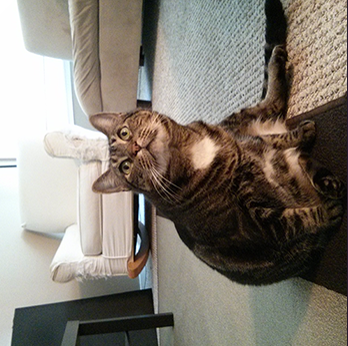
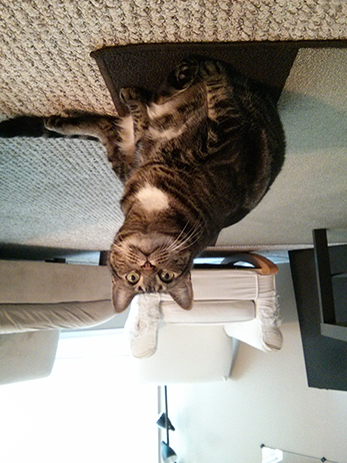


El mètode rotate() té l'argument opcional expand, que es pot establir a True per a ampliar les dimensions de la imatge i que s'ajuste a tota la nova imatge rotada.
Recordeu que, una vegada finalitzem el tractament de les imatges, és convenient tancar tots els objectes Image.
#Tanca totes les imatges
mosaic_gat.close()
imatge_reduida.close()
copia_gat.close()
imatge_cara.close()
imatge_gat.close()
8.4 Creació de gràfics
La biblioteca Matplotlib permet crear una àmplia varietat de gràfics (gràfics de línies, de barres, de dispersió, circulars bàsics, 3D …). Podeu trobar la documentació completa en https://matplotlib.org. Depenent del Sistema Operatiu i la configuració de Python, haureu de seguir uns passos per a la instal·lació de Matplotlib.
Línies i Dispersió
Un gràfic de línies és ideal per a mostrar els canvis en una mesura al llarg del temps. En Matplotlib, els termes plot, graph i chart s'usen indistintament, i el terme figure es refereix a la finestra que conté un o més gràfics.
Importem matplotlib.pyplot amb el nom plt per a facilitar la introducció de les seues funcions.
A continuació, per a representar els punts de dades en una figura 2D, hem de cridar a la funció plt.plot(). Primer associarem al gràfic els valors per als eixos horitzontal/vertical guardats en x i y1. Després de cridar a plt.plot() amb aquests valors, l'invoquem una segona vegada amb x i y2 per a afegir una segona línia al gràfic.
import matplotlib.pyplot as plt
x = [0, 1, 2, 3, 4, 5]
y1 = [10, 13, 15, 18, 16, 20]
y2 = [9, 11, 18, 16, 17, 19]
plt.plot(x, y1)
plt.plot(x, y2)
# Per guardar un fitxer d'imatge del gràfic, heu de cridar
# plt.savefig() abans de cridar a plt.show()
plt.savefig('linies.png')
plt.show()
Matplotlib seleccionarà automàticament els colors de les línies i una grandària adequada per al gràfic. Podem guardar el gràfic predeterminat com una imatge PNG cridant a plt.savefig().

Matplotlib compta amb la funció plt.show() de vista prèvia que mostra el gràfic en una finestra. Cal remarcar que, si volem guardar el gràfic, hem de fer-ho abans de cridar a la funció plt.show(). La crida a la funció bloquejarà l'execució del codi i no tornarà fins que l'usuari tanque la finestra.
Per a crear un gràfic de dispersió d'aquestes mateixes dades, passeu els valors de l'eix x i de l'eix y a la funció plt.scatter().
# Gràfica Scatter
plt.scatter(x, y1)
plt.scatter(x, y2)
plt.savefig('scatter.png')
plt.show()
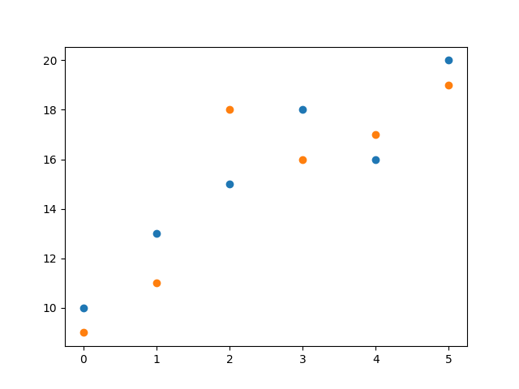
Barres i gràfics circulars
Els gràfics de barres són útils per a comparar el mateix tipus de dades en diferents categories. A diferència d'un gràfic de línies, l'ordre de les categories no és important, encara que solen estar ordenades alfabèticament.
# Barres
categories = ['Gats', 'Gossos', 'Ratolins', 'Pardals']
valors = [100, 150, 30, 200]
plt.bar(categories, valors)
plt.savefig('barres.png')
plt.show()
Passem les categories a enumerar en l'eix x com la primera llista a plt.bar() i els valors per a cada categoria com la segona llista.
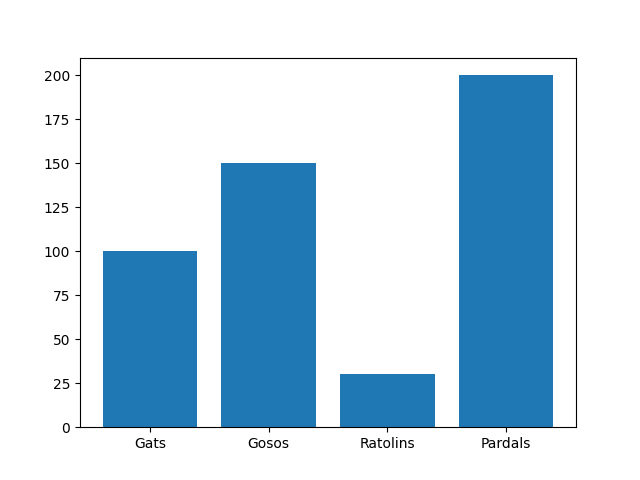
Per a crear un gràfic circular, utilitzarem la funció plt.pie(). En lloc de categories i valors, un gràfic circular té sectors i etiquetes. La funció plt.pie() accepta una llista de grandàries de porció i una llista d'etiquetes per a cada porció.
# Gràfic Circular
porcions = [100, 150, 30, 200] # El tamany de cada porció
etiquetes = ['Gats', 'Gossos', 'Ratolins', 'Pardals']
plt.pie(porcions, labels=etiquetes)
plt.savefig('tarta.png')
plt.show()
El primer argument posicional de plt.pie() fa referència a les porcions x (porcions en aquest exemple), però el segon no fa referència a les etiquetes, sinó a l'atribut explode, per la qual cosa per a assignar els valors d'etiquetes a l'atribut labels del plt.pie() hem d'especificar-ho en la crida a la funció.
Podeu consultar els detalls dels diferents paràmetres de plt.pie() en la seua documentació oficial.


Entre la gran diversitat d'atributs que podem modificar per a obtindre el gràfic desitjat, l'atribut autopct ens permet mostrar el valor de cada porció com un % respecte del total.
plt.pie(porcions, labels=etiquetes, autopct='%.1f%%')
plt.savefig('tartaX100.png')
plt.show()
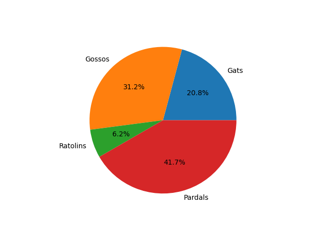
L'atribut és una cadena d'especificació de format: la cadena '%.1f%%' especifica que el nombre ha de mostrar un dígit després del punt decimal i després del decimal es mostra el símbol de % (la cadena '%.1f' mostraria el mateix valor, però sense el símbol de % final).